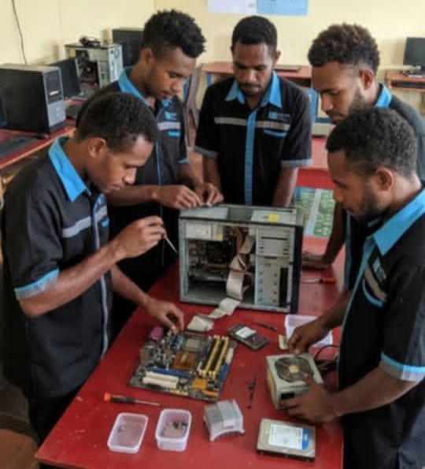

Halo, Saya Sendo
Saya tertarik di bidang Hardware
Saya adalah siswa SMK jurusan Teknik Komputer dan Jaringan yang memiliki minat dalam bidang hardware komputer, jaringan, dan teknologi informasi.
Lihat Portfolio Hubungi Saya
Saya tertarik di bidang Hardware
Saya adalah siswa SMK jurusan Teknik Komputer dan Jaringan yang memiliki minat dalam bidang hardware komputer, jaringan, dan teknologi informasi.
Lihat Portfolio Hubungi Saya
Saya merupakan siswa SMK jurusan Teknik Komputer dan Jaringan yang aktif mempelajari perakitan komputer, instalasi sistem operasi, jaringan komputer, dan troubleshooting hardware.
Saya memiliki semangat belajar tinggi dan ingin menjadi teknisi komputer profesional serta mengembangkan kemampuan di bidang teknologi informasi.

Praktik perakitan komputer dan pengenalan hardware komputer di laboratorium sekolah.
Melakukan pengecekan dan perbaikan motherboard serta komponen komputer.

Praktik pembongkaran dan perawatan laptop untuk meningkatkan kemampuan teknisi komputer.